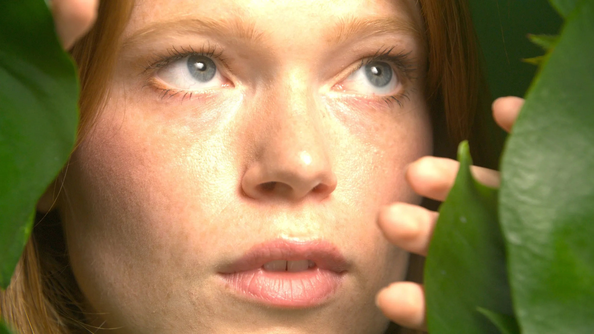
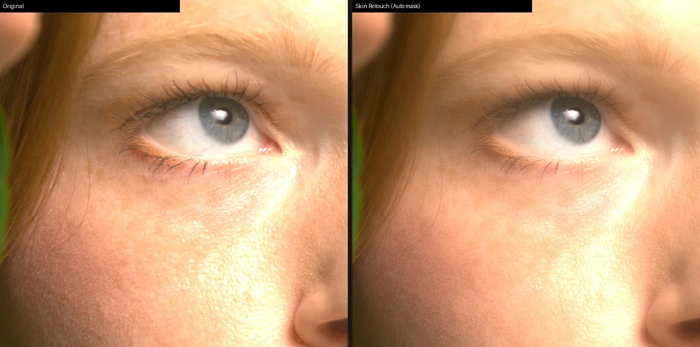
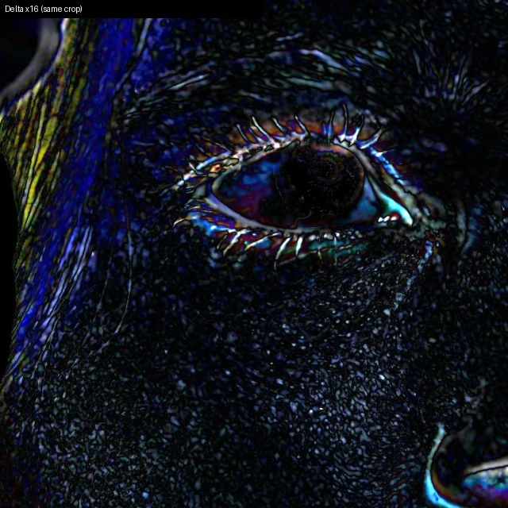
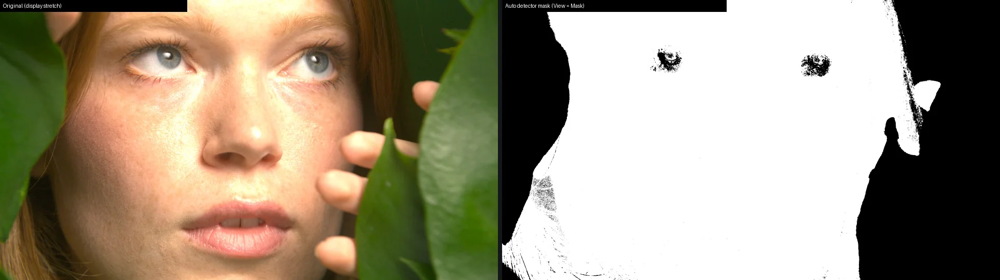
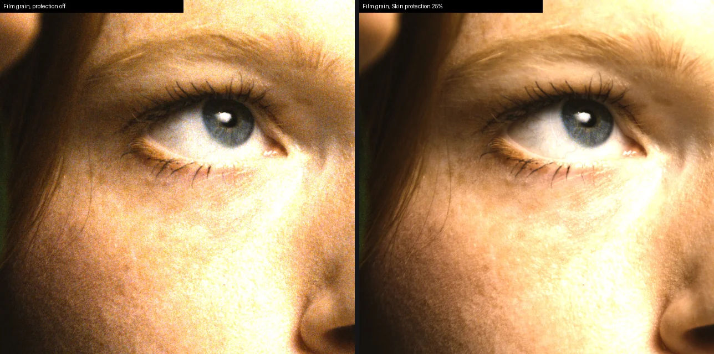

Corectezi imaginea. Păstrezi intenția.
GDC STYLE Client instalează în DaVinci Resolve un lanț complet de culoare OpenFX — de la transformarea de intrare la cea de ieșire — plus GDC Skin Retouch, care curăță pielea doar unde indici și lasă restul cadrului neatins.
Fotografie: cadru licențiat, neretușat.
Același cadru, același afișaj.
Originalul în stânga, GDC Skin Retouch în dreapta, aceeași decupare 1:1. Smooth 0,4 · Spots 0,5 · Color 0,5. Cadru real, RED Log3G10 convertit în ACEScct / AP1, randat în DaVinci Resolve.




Judecata vizuală îți aparține: efectul se evaluează pe materialul tău, nu pe cadrele de aici.
Conectezi masca o singură dată.
Skin Retouch este un node propriu. Imaginea merge pe portul RGB; masca ta — o fereastră, un qualifier, Magic Mask — merge pe portul Key al celei de-a doua intrări a nodului.
- Pune corecția de bază pe un node în serie.
- Creează o mască a feței cu Magic Mask, plus ferestre pentru pistrui și alunițe pe care vrei să le păstrezi.
- Combină-le în Key Mixer: pielea cu Add, zonele păstrate cu Subtract.
- Adaugă GDC Skin Retouch: imaginea pe portul RGB, cheia pe portul Key al intrării OFX 2 (Add OFX Input). Mask Source → Second Input, Mask Channel → Alpha.
- Verifică cu View → Mask și View → Delta, apoi crește Smooth, Spot Amount și Color Amount; readu View pe Result înainte de randare.
Verificat în DaVinci Resolve 21.1.1.10: cheia ajunge pe portul Key exact așa cum iese din nod. Cu Magic Mask live, cheia e binară și diferă de o mască coaptă într-un fișier. Fără mască conectată, în modul Second Input imaginea rămâne neschimbată.
Douăsprezece instrumente și două componente de pipeline.
Grupate după ce decizi, nu după cum sunt construite. Fiecare funcționează pe ACES, DaVinci, ARRI LogC3 și ARRI LogC4.
Pregătești lumina
- Input TransformAduce clipul din codarea camerei în lanț; 25 de surse, cu nivelul de proveniență vizibil, plus intrări de afișaj Rec.709 / sRGB.
- Linear to LogTrece imaginea din scene-linear în curba log a pipeline-ului ales.
- Exposure + BalanceExpunere, balans de alb și lumini de imprimare, cu Printer light Master, în lumină liniară.
- OpticsDifuzia filtrului din fața obiectivului și strălucirea luminilor, în stopuri.
Modelezi culoarea
- ColorAlegi o familie de culori și o muți, fără măști.
- Saturation + HueSaturație și nuanță globală, într-un singur instrument.
- ToneLift, gamma, gain, roți pe zone, ASC CDL și contrast cu pivot, în stopuri.
- Highlights + GamutDrum spre alb, comprimarea gamei și un umăr moale, înainte de film.
Pielea
- SkinUnifică și rafinează tonul pielii fără să atingi restul imaginii; acum cu mască externă și uniformizare locală.
- Skin RetouchNetezește textura, atenuează petele, uniformizează culoarea — în zona pe care o dai, cu marginea protejată. Produs nou.
Caracterul imaginii
- LookCaracter vizual de pornire: ton, paletă și zone, cu protecția pielii.
- FilmNegativ, print, grăunte și halație; grăuntele poate ocoli pielea.
- Cinema StyleBiblioteca creativă de 86 de stiluri de film, cu textură de film opțională.
Livrezi
- DRTTransformarea de ieșire către Rec.709, cu Output encoding: Gamma 2.4, Gamma 2.2 sau sRGB.
Documentația, în trei limbi.
Aceleași trei documente sunt în aplicație, în Documentație. Sunt PDF-uri cu cuprins, bookmark-uri și text selectabil.
Ghidul coloristului
Lanțul complet al culorii și fiecare instrument: problema, un exemplu, ce faci și ce vezi.
Manualul tehnic
Cerințe, instalare, ediții și licențe, pagina Pipeline și fiecare control, cu valori implicite și domenii.
Ce nu face.
- Doar macOS: instrumentele rulează pe Metal. Windows, CUDA și OpenCL nu sunt disponibile pentru GDC Skin Retouch.
- GDC Skin Retouch calculează intern în ACEScct / AP1: pe DaVinci, LogC3 și LogC4 imaginea e convertită, retușată și adusă înapoi în profilul tău. Imaginile reale din această pagină vin dintr-un singur clip RED; pe celelalte pipeline-uri verificarea e numerică și în Resolve pe scene de test.
- Scripting-ul DaVinci Resolve nu poate crea noduri OpenFX sau seta parametri OpenFX: nodurile le montezi tu. AI Ready pregătește rețeta și planul, nu atinge Resolve.
- Detectorul de culoare (Auto) și modul pe cadru întreg sunt rezerve declarate: pot prinde lemn cald, nisip sau pereți drept piele. Masca ta rămâne calea precisă.
- Retușul nu promite un anumit aspect: rezultatul artistic se judecă pe materialul propriu.
Descarcă GDC STYLE Client
Instalezi aplicația, alegi pipeline-ul proiectului și instalezi instrumentele din ea. Fără licență, instrumentele rulează în ediția Demo; cu o licență valabilă, în ediția Full.
Cerințe
- macOS 13 sau mai nou
- DaVinci Resolve Studio cu OpenFX (verificat pe 21.1)
- Aplicația este semnată Developer ID și notarizată de Apple
Demo și Full
- Demo: fără licență, cu mici marcaje DEMO rare; restul funcționează la fel.
- Full: după o licență cerută din aplicație (nume și e-mail); aplicația descarcă doar pachetele pe care le acoperă licența.
- La expirare sau revocare, instrumentele revin la Demo; nodurile și valorile rămân neatinse. Aplicația este gratuită; susținerea proiectului este o donație opțională.
AI Ready
Creează și validează rețete GDC STYLE cu Claude, ChatGPT, Gemini sau alți agenți compatibili. Aplicarea în DaVinci Resolve rămâne sub controlul tău; helperul rulează local, fără rețea.